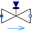
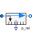

PumpingSystemModel of a pumping system for drinking water |
|
Diagram
{kind=link}
Information
This information is part of the Modelica Standard Library maintained by the Modelica Association.
Water is pumped from a source by a pump (fitted with check valves), through a pipe whose outlet is 50 m higher than the source, into a reservoir. The users are represented by an equivalent valve, connected to the reservoir.
The water controller is a simple on-off controller, regulating on the gauge pressure measured at the base of the tower; the output of the controller is the rotational speed of the pump, which is represented by the output of a first-order system. A small but nonzero rotational speed is used to represent the standby state of the pumps, in order to avoid singularities in the flow characteristic.
When the simulation starts, the level is above the set point, so the initial state of the pump controller is off. Hence, the check valve of the pump is engaged. In order to facilitate the solution of the initialization problem, the homotopyType parameter is set accordingly.
Simulate for 2000 s. When the valve is opened at time t=200, the pump starts turning on and off to keep the reservoir level around 2 meters, which roughly corresponds to a gauge pressure of 200 mbar.

Components (13)
| source |
Type: FixedBoundary |
|
|---|---|---|
| pipe |
Type: StaticPipe |
|
| pumps |
Type: PrescribedPump |
|
| reservoir |
Type: OpenTank |
|
|  | userValve |
Type: ValveLinear |
| sink |
Type: FixedBoundary |
|
| valveOpening |
Type: Step |
|
| RelativePressureSetPoint |
Type: Constant |
|
| controller |
Type: OnOffController |
|
| PumpRPMGenerator |
Type: TriggeredTrapezoid |
|
|  | reservoirPressure |
Type: RelativePressure |
| PT1 |
Type: FirstOrder |
|
| system |
Type: System |